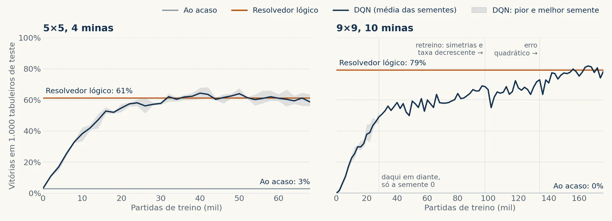

A rede roda no seu navegador
São os mesmos 39.937 pesos treinados em PyTorch, reescritos em JavaScript sem bibliotecas. Comparados com o PyTorch em 60 tabuleiros, os valores batem até a quinta casa decimal e a jogada escolhida é a mesma em todos.
Aprendizado por reforço · roda no seu navegador
Esta é a rede que treinamos em PyTorch, jogando de verdade aqui na página. Peça uma jogada, deixe ela jogar sozinha ou clique numa casa para jogar você. A cor de cada casa mostra a chance de mina que a rede estima.
0 vitórias 0 derrotas nesta visita
A primeira casa aberta nunca é mina. Uma casa com 0 abre as vizinhas em cadeia.
Vitórias em 10.000 tabuleiros de teste, que o agente não viu no treino. Todas as estratégias jogam os mesmos tabuleiros.

São os mesmos 39.937 pesos treinados em PyTorch, reescritos em JavaScript sem bibliotecas. Comparados com o PyTorch em 60 tabuleiros, os valores batem até a quinta casa decimal e a jogada escolhida é a mesma em todos.
Para cada casa fechada, a rede dá um valor Q: quanto vale abri-la. Como uma casa segura rende +1 e uma mina rende −10, dá para converter o valor Q numa chance de mina estimada. É ela que pinta cada casa.
São 5 camadas de 32 filtros 3×3 e uma 1×1 no fim. O mesmo filtro avalia cada casa olhando a vizinhança, do jeito que uma pessoa lê os números em volta.
O jogo não muda se o tabuleiro for girado ou espelhado. No 9×9, a rede avalia as 8 versões e tira a média dos valores, o que rendeu de 5 a 14 pontos sem nenhum treino a mais.
Double DQN com replay de 200 mil jogadas, rede-alvo copiada a cada 1.000 passos e γ = 0,1. A rede final do 9×9 treinou por cerca de 166 mil partidas, com erro quadrático no lugar da perda de Huber.
Combinada com a lógica, que abre as casas garantidas, e usada só para chutar, a DQN chega a 89,7% no 9×9: a menos de 1 ponto do cálculo exato de probabilidade. Sozinha, às vezes ainda erra uma dedução.
Trabalho da disciplina de Inteligência Artificial, feito em dupla com Cauê Fernando Faria Abreu. O código, os vídeos do treino e os slides estão no repositório do projeto.